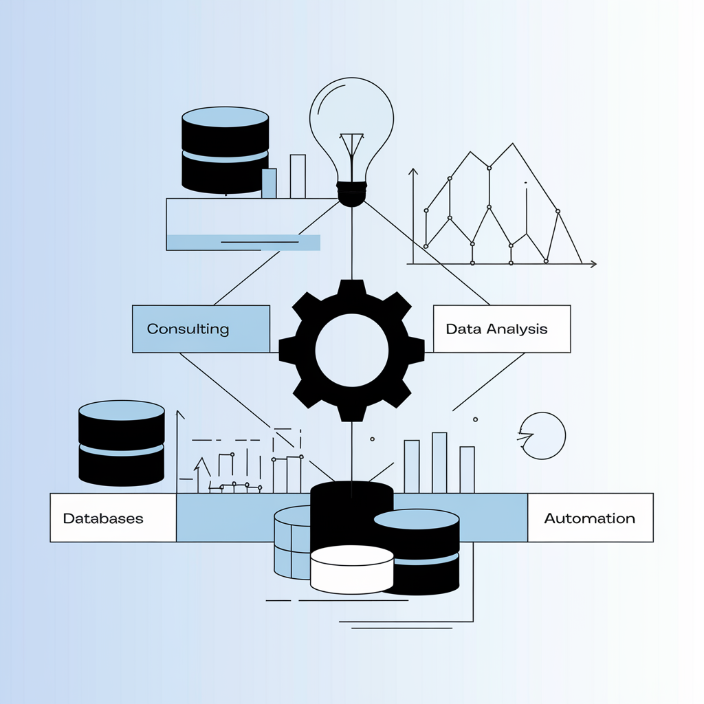

Perfil Profesional

Soy Contador Público y Analista Contable con más de 15 años de experiencia, principalmente en el sector público y como profesional independiente. Actualmente, me desempeño como Contador General en la Dirección General de Escuelas de Mendoza, donde gestiono procesos contables y financieros a gran escala.
En los últimos años, mi enfoque ha evolucionado hacia la implementación de soluciones de Inteligencia Artificial, Machine Learning y Deep Learning para optimizar la toma de decisiones. Con un énfasis especial en herramientas de Business Intelligence como Power BI, desarrollo tableros interactivos, modelos predictivos y automatizaciones que aceleran los procesos de mis clientes, reducen costos y mejoran su competitividad.
Mi objetivo es aprovechar al máximo el potencial de los datos: desde la limpieza y modelado hasta la implantación de soluciones avanzadas de IA, brindando asesoría financiera y contable con enfoque analítico. Fuera del entorno profesional, equilibro mis pasiones con el deporte, practicando ciclismo, natación y running, además de mi rutina de gimnasio.
En mi porfolio encontrarás ejemplos de dashboards, proyectos de análisis de datos y otras iniciativas en las que he incorporado algoritmos de IA. Para mí, cada organización tiene oportunidades que pueden potenciarse con estrategias de datos bien diseñadas. Estoy comprometido con ayudar a mis clientes a descubrir nuevos patrones y crear valor real a partir de la información.
Educación y experiencia

Educación
- 2022: Lenguaje de programacion PYTHON - Fundación Santísima Trinidad
- 2021: Diplomado en Inteligencia de Datos en la Gestión de Organizaciones - FCE UNCuyo
- 2020-2021: Power BI Desktop - Coursera / UDEMY / DatData
- 2015: Diseño Web Integral
- 2004-2014: Contador Público y Perito Partidor - UNCuyo
Experiencia Profesional
-
Dirección General de Escuelas - Mendoza (2017 - Hoy):
Contador General, responsable de la liquidación y análisis contable, además de la gestión de datos contables, de alumnos y de sueldos.
-
Universidad Nacional de Cuyo (2009 - 2017):
Responsable de área y analista contable, encargado de la elaboración y análisis del presupuesto de la UNCUYO.
-
Trabajo Independiente (2009 - Hoy):
Asesoramiento y presentaciones tributarias, elaboración de informes contables y presupuestarios.
-
Análisis de datos y visualizaciones (2020 - Hoy)
Habilidades

- Excel: Avanzado
- Word: Avanzado
- Inglés: Básico
- Portugués: Intermedio
- Liquidación de impuestos: Ganancias y Bs. Ps., Ingresos Brutos Mdz. y Monotributo
- Diseño Web: Básico
- Photoshop: Básico
- Data Analytics: Python, R, Power BI, Tableau, SQL, MongoDB
Capacitaciones
- 2023: Curso de Inglés Aplicado a las Tecnologías, niveles 1, 2 y 3
- 2022: Lenguaje de programación PYTHON en Fundación Santísima Trinidad
- 2021: Diplomado en Inteligencia de Datos en la Gestión de Organizaciones - FCE UNCuyo
- 2020: Programming for Everybody (Getting Started with Python)
- 2020: Inteligencia Artificial en Power BI
- 2020: Curso completo de Power BI Desktop en Coursera
- 2020: Curso de Power BI Desktop en UDEMY
- 2015: XXXII Simposio Nacional de Profesores Universitarios de Contabilidad Pública en la Facultad de Ciencias Económicas UNCuyo
- 2015: Curso de Diseño Web Integral dictado por Bisiesto - E-Commerce & Social Media (6 meses)
- 2014: Curso de "Liquidación del impuesto a las ganancias y bienes personales 2013" en la FCE UN Cuyo
- 2014: Curso de "Régimen de Concursos para cubrir cargos vacantes del Personal de Apoyo Académico" – Unidad Ejecutora de Capacitación
- 2014: Curso de "Uso del programa estadístico SPSS – Nivel Inicial" (20 horas)
- 2013: Curso de Uso Avanzado de Planilla de Cálculo (20 horas) – Dirección de Educación a Distancia
- 2013: Congreso Nacional de la Comunidad Universitaria por la educación superior
- 2013: Curso "Herramientas para enfrentar una entrevista de concurso" (10 horas)
- 2013: Curso de "Liquidación del impuesto a las ganancias y bienes personales 2012" en la FCE UN Cuyo
- 2013: Taller de SIU PILAGÁ UNCUYO (10 horas)
- 2012: Curso de Portugués: Niveles I, II y III organizado por la UEC de la UN Cuyo
- 2011: Curso de "Excel Intermedio" (20 horas) y "Excel Avanzado" (20 horas)
- 2011: Participación en el seminario SEGURINFO CUYO en la FCE UN Cuyo
- 2011: 27ª Jornadas Nacionales de Ciencias Económicas en la UN Cuyo
- 2008: Conferencia "Elección y Constitución de Sociedades" – Centro de Estudiantes FCE UN Cuyo
- 2008: Foro-Debate "Normas Profesionales Argentinas. ¿Qué tipo de normas queremos?" – UN Cuyo
- 2003: Embajador de Rumania en el V Modelo de Naciones Unidas de los colegios de la UN Cuyo
Porfolio
Dashboards Interactivos
Servicios

Ofrezco una gama de servicios orientados a potenciar la gestión financiera y la toma de decisiones estratégicas a través de la analítica avanzada y la Inteligencia Artificial:
- Consultoría Financiera y Contable: Diagnóstico y optimización de procesos contables, tributarios y presupuestarios.
- Análisis de Datos e IA: Implementación de modelos de Machine Learning y Deep Learning para pronósticos, segmentaciones y detección de patrones.
- Business Intelligence: Creación de dashboards interactivos en Power BI, Tableau y otras herramientas, integrando múltiples fuentes de datos.
- Automatización de Procesos: Desarrollo de scripts y soluciones personalizadas en Python y R, reduciendo tiempos y costes operativos.
- Transformación Digital: Asesoría para la incorporación de soluciones digitales que incrementen la productividad y competitividad en organizaciones.
Mi prioridad es traducir la complejidad de los datos en información clara y accionable para impulsar el crecimiento de tu organización.